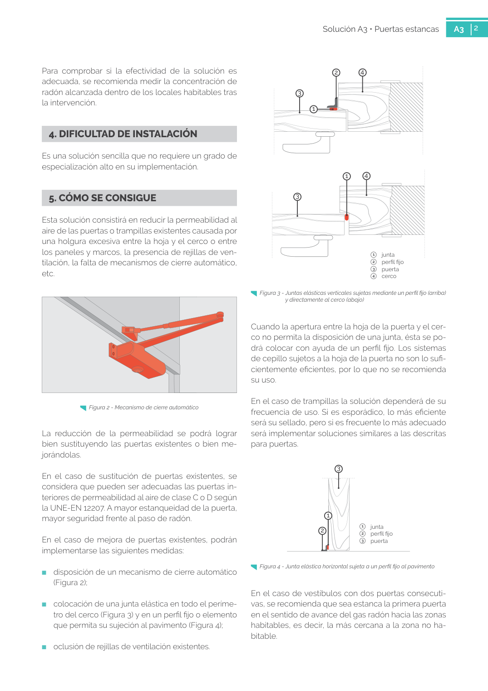

GUIA · 2. CUÁNDO SE UTILIZA · versión sin-fecha · capa guia
Formatos: JSON compacto · Markdown · PDF fuente
Ámbito del documento · texto del ámbito · documento y tablas
Tipo: tablas, figuras · nivel 1 · sección estimada: 2. CUÁNDO SE UTILIZA · padre:
2. CUÁNDO SE UTILIZA Esta solución se empleará cuando exista un espacio de contención comunicado con el resto del edificio mediante puertas o trampillas con alta permeabilidad al aire (Figura 1). En todo caso, también se podrán se llar las puertas y trampillas que comuniquen cualquier cámara o local no habitable situado entre el terreno y los locales a proteger con el resto del edificio, me jorando así la protección frente al radón, como, por ejemplo: ■ un sótano/semisótano con garaje o trasteros y una planta baja dedicada a locales comerciales o vivien das; ■ un sótano/semisótano con aparcamiento y una planta baja de una vivienda unifamiliar; ■ una cámara sanitaria y la planta baja desde la que se accede. (1) Se ha considerado la mejora de una puerta existente 2 Solución A3 • Puertas estancas A3 2 Para comprobar si la efectividad de la solución es adecuada, se recomienda medir la concentración de radón alcanzada dentro de los locales habitables tras la intervención.

PDF fuente redistribuible: copia fiel enlazada en esta página (SHA256 verificado).